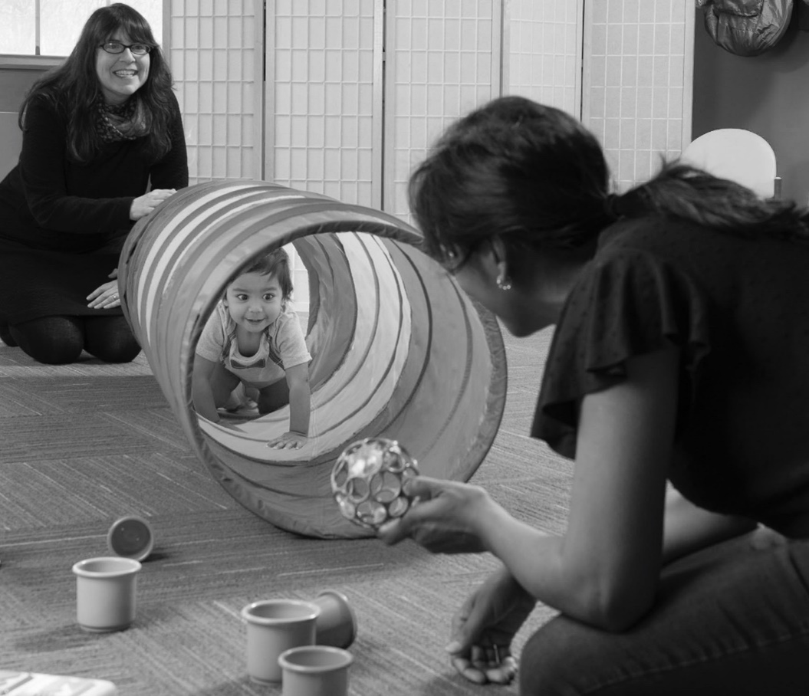
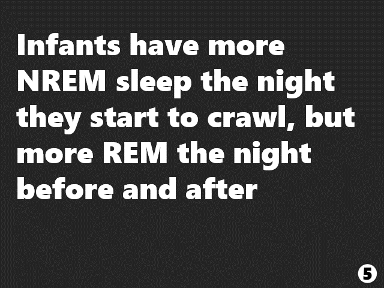

Research and publications
Motor experience and body representations
The development of grasping and later neural representation of fingers

A project through the Developmental Science Lab at Temple University is currently studying how infants learn to reach and grasp for a pencil from 6 to 14-months. We use a customized software (TrHandy, Ab.Acus) to code videos submitted by parents and can extract the kinematic properties of the reach and grasp. Of particular interest is the emergence of the mature pincer grasp. At 14-months, infants come to the lab and participate in a tactile oddball paradigm stimulating their fingertips while undergoing EEG. Of particular interest is a neural signature (somatosensory mismatch negativity - sMMN) in the frontocentral regions. We hypothesize that functional differences in the way infants use their pinky and middle fingers to grasp will relate to neural body representations, manifesting as greater sMMN in response to a tactile stimulation of the middle finger versus the pinky finger.
For more information - https://sites.temple.edu/devscilab/babygrasp/
Motor experience and neural plasticity in finger representations
A complimentary project with older participants also uses the tactile oddball paradigm and sMMN.Here, we hypothesize that neural plasticity persists into adulthood and motor experience can change the neural representation of digits. Undergraduates participate in a typing test, a traditional measure of finger independence, and complete questions about video game and music experience. We expect that more experience using individual fingers and greater finger independence will lead to greater sMMN in response to a tactile stimulation of the middle finger versus the pinky finger.
Cognitive and motor development and sleep
Cognition-action tradeoffs and the organization of attention
This chapter discusses what cognition–action trade-offs in infancy reveal about the organization and developmental trajectory of attention. We focus on internal attention because this aspect is most relevant to the immediate concerns of infancy, such as fluctuating levels of expertise, balancing multiple taxing skills simultaneously, learning how to control attention under variable conditions, and coordinating distinct psychological domains. Cognition–action trade-offs observed across the life span include perseveration during skill emergence, errors and inefficient strategies during decision making, and the allocation of resources when attention is taxed. An embodied cognitive-load account interprets these behavioral patterns as a result of limited attentional resources allocated across simultaneous, taxing task demands. For populations where motor errors could be costly, like infants and the elderly, attention is typically devoted to motor demands with errors occurring in the cognitive domain. In contrast, healthy young adults tend to preserve their cognitive performance by modifying their actions.
Motor development in context
The study of motor development has traditionally focused on the timing and sequence of the acquisition of motor skills, such as sitting, crawling, or walking, over the first years of life. Because motor skills are directly observable, motor development serves as a useful exemplar for general principles of development. Current frameworks emphasize motor development in and as a context, such as how change in motor skill interacts with simultaneous change in other developmental domains, how the acquisition of new motor skills creates new opportunities for learning, and how the context in which motor development occurs shapes the course of development. For example, the onset of new motor skills changes the allocation of attentional resources, the quality of infants’ sleep, and available perceptual information. Reciprocally, contexts such as culturally specific parenting practices and individual differences in everyday experiences impact the timing and trajectory of new motor skills.

The impact of motor experience on exploration and problem solving
One hundred and six infants with varied independent walking experience faced the problem of navigating a tunnel to reach a caregiver. Solving the task required infants to switch from standing to crawling so they could fit their bodies into the tunnel. Spontaneous exploratory behaviors were documented. Infants who did not immediately go through the tunnel received a strict 15-step training protocol to highlight relevant details of the task. Age and walk experience were entered as predictors into a series of stepwise regressions on measures of exploratory and problem-solving behaviors. In general, older infants were more successful than younger infants in completing the task. A significant nonlinear relationship was documented between walk experience and some outcome measures. Infants with a moderate amount of walk experience had more difficulty than those with very little or a lot. Microgenetically documenting problem solving as a function of experience revealed that attention is taxed during mastery of a motor skill. Availability of attentional resources, in turn, impacted
Newly walking infants’ night sleep impacts next day learning and problem solving
Sleep is part of the process that prepares children and adults for next day cognitive activity. Insufficient or fragmented sleep has a detrimental impact on subsequent encoding (Rouleau et al., 2002) and cognitive functioning (Joo et al., 2012). However, fragmented sleep early in life is a developmental norm, limiting the extent to which conclusions derived from older populations can be generalized. To directly test the continuity of this relationship, newly-walking infants’ (N = 58) sleep was monitored overnight using actigraphy. The next morning they were taught a motor problem-solving task. The task required infants to navigate through a tunnel to reach a goal at the other end. We coded infants’ exploratory behaviors and the extent of training required to solve the task. Using a cluster analysis that accounted for exploratory behaviors and number of training prompts, infants were sorted into three profiles: those who found the task Easy to solve, those who found it Difficult, and those who Never solved it. Wake episodes and sleep efficiency were entered as predictors of cluster membership in a multinomial logistic regression. Of the infants who ultimately solved the task, those with more wake episodes and lower sleep efficiency had more difficulty. Specifically, fragmentation appeared to negatively impact preparedness to learn. Contrary to our expectations, infants who Never solved the task had the least fragmented sleep, indicating that an optimal level of fragmentation is needed for efficient problem-solving. For infants, some level of sleep fragmentation is needed the night before learning in order to solve a task efficiently. These findings highlight the interaction between developmental domains, from sleep quality to motor experience, and their impact on infant learning in real time.
Nap timing makes a difference: Sleeping sooner rather than later after learning improves infants’ locomotor problem solving
Twenty-nine newly-walking infants who had recently given up crawling trained to navigate a shoulder-height, nylon tunnel to reach a caregiver waiting at the other end. Infants in the Nap First group napped within 30 min of initial training. Infants in the Delay First group napped four hours after training. All infants were retested six hours after training on the same locomotor problem. Learning was measured by the number of training prompts required to solve the task, exploration, and time to solve the problem. Nap First infants benefited the most from a nap; they required fewer training prompts, used fewer posture shifts from training to test, and solved the task faster compared to Delay First infants, suggesting that optimally timed sleep does not merely protect against interference, but actively contributes to memory consolidation. This study highlights the importance of nap timing as a design feature and was a first step towards limit-testing the boundaries of the relation between sleep and learning. Infants’ fragile memories require regular consolidation with intermittent periods of sleep to prevent interference or forgetting.
The unique contributions of day and night sleep to infant motor problem solving
The current study sought to tease apart the unique contributions of napping and nighttime sleep to infant learning, specifically in the context of motor problem solving. We challenged 54 walking infants to solve a novel locomotor problem at three time points— training, test, and follow-up the next morning. One group of infants napped during the delay between training and test. Another group did not sleep during the delay. A third group received the test immediately after training with no delay. Only the Nap group’s strategy choices continued to improve through the follow-up session, suggesting that daytime sleep has an active role in strengthening otherwise fragile memory. Although group did not affect strategy maintenance, walk experience did, suggesting that task difficulty may shape the impact of sleep on learning. Thus, day sleep and night sleep make independent contributions to the consolidation of motor problem-solving strategies during infancy.

Longitudinal assessment of sleep and motor milestone acquisition.
By using Nanit video baby monitors and parent reported motor skill diaries, we get a prospective glimpse into infants’ sleep around the acquisition of new motor skills.
In one investigation, Nanit provided nightly sleep summaries statistics including number of wake episodes, sleep efficiency, total sleep time, and sleep onset latency. We looked for patterns in the nights immediately before and after the acquisition of sitting, pulling to stand, hands-and-knees crawling, cruising, and walking.
In a second study, complete nights of video were state scored into REM, NREM, indeterminate sleep, and wake. We focused on the nights before, of, and after the onset of sitting, crawling, and walking.
Methods for studying sleep
Comparing researcher choices for sleep assessment
Incorporating infant sleep, either as a predictor or as an outcome variable, into interdisciplinary work has become increasingly popular. Sleep researchers face many methodological choices that have implications for the reliability and validity of the data. Here, the authors directly investigated the impact of design and measurement choices in a small, longitudinal sample of infants. Three sleep measurement techniques—parent-reported sleep diaries, actigraphy (Micromini Sleep Watch), and a commercial videosomnography (Nanit)—were included, using actigraphy as the baseline. Nine infants’ sleep (4 girls) was measured longitudinally using all three measurement techniques. Nanit provided summary statistics, using a proprietary algorithm, for nightly sleep parameters. The actigraphy data were analyzed with both the Sadeh Infant and Sadeh algorithms. The extent to which measurements converged on sleep start and end time, number of wake episodes, sleep efficiency, and sleep duration was assessed. Measures were positively correlated. Difference scores revealed similar patterns of greater sleep estimation in parent reports and Nanit compared with actigraphy. Bland- Altman plots revealed that much of the data were within the limits of agreement, tentatively suggesting that Nanit and actigraphy may be used interchangeably. Graphs display significant variability within and between individual infants as well as across measurement techniques. Potential confounding variables that may explain the discrepancies between parent report, Sadeh Infant, Sadeh, and Nanit are discussed. The findings are also used to speak to the advantages and disadvantages of design and measurement choices. Future directions focus on the unique contributions of each measurement technique and how to capitalize on them.
New in-home methods for studying sleep states in infancy
Research studying the role of sleep in development abounds but focuses on global aspects of sleep like quality or timing. Far fewer studies include the ultradian cycle, or patterns of REM and non- REM (NREM), because doing so is costly in time and resources. In a complete, lab-based sleep study, individuals are monitored by a technician overnight while wearing a host of sensors to capture brain activity, eye and limb movement, and cardiorespiratory rates. There is a need for creative, minimally disruptive solutions to study sleep that do not compromise the richness and accuracy of the measurements. The current pilot study parsed down the physiological measures to only movement and cardiorespiratory rates, creating a protocol simple enough for caregivers to incorporate into bedtime. Ten 12-month-old infants (+/- 3 weeks) wore an actigraph and wireless cardiorespiratory sensor for five nights of data collection. Of this, 92% were useable data. Actigraphy was analyzed with the Sadeh algorithm to delineate sleep from wake. Heart rate and respiration were then used to state score visually or via an algorithm; greater variability demarcated REM from NREM. Time spent in each state was compared between scoring methods as well as to published results from age matched infants who underwent polysomnography (PSG). Visually scored data, using a 1-hour viewing window, was in line with peer’s PSG values. To automatically state score, epoch-by-epoch cardiorespiratory and actigraphy files were produced for each minute of data collection. Heart and respiratory rates were transformed into z-scores and iterations of scoring, using increasingly greater z score thresholds, were compared to determine which identified state proportions most similar to data collected with PSG. Based on these results, our novel method appears to be a feasible choice for studying the ultradian cycle. The combination of actigraphy and cardiorespiratory monitoring is uniquely advantageous because it is less resource intensive and more naturalistic, being put on by caregivers while still resulting in high rates of good data. Taken together, it is a quality option for infant researchers interested in incorporating sleep into their paradigms.